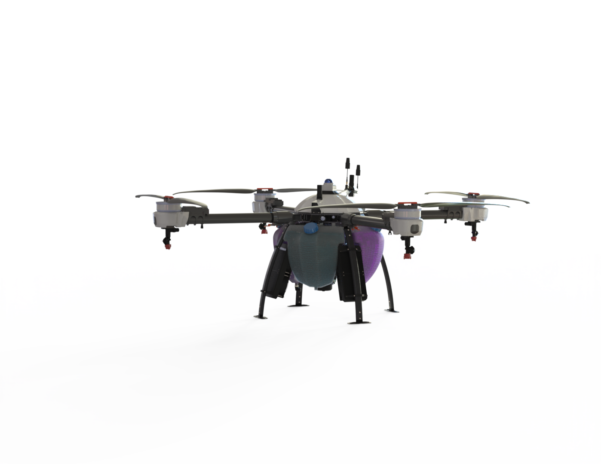
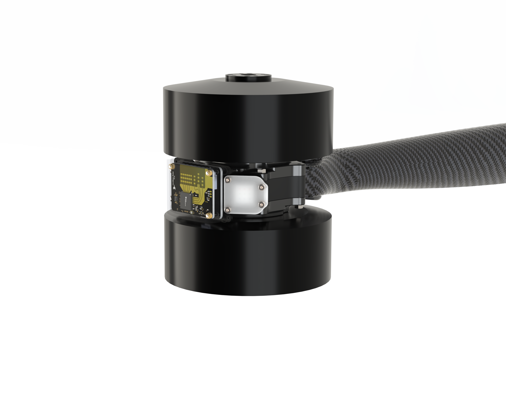
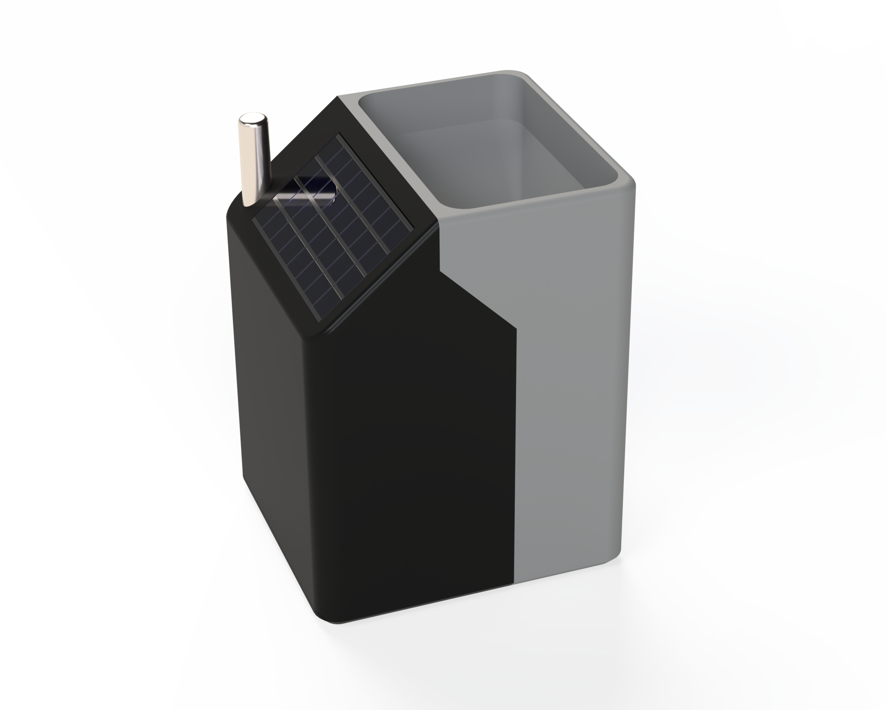

Hi, my name is Sam Bain
I am a
About Me
Highly organized and adaptable mechatronics engineer with 2+ years of experience designing, developing, and optimizing complex mechanical, electrical, and software systems. Proven expertise in autonomous drones, embedded systems, and power management. Passionate about solving technical challenges with innovative solutions and a strong ability to learn quickly and work across multidisciplinary teams.
Projects




Contact
Email: sambain2001@gmail.com